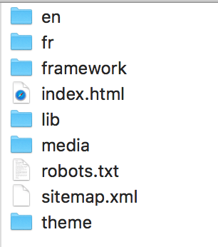

Sled | mise à jour 1.0.3
Nouveau kit audio.
Le kit audio ajoute quatres nouveaux composants (nouvelle section Audio) :
- Lecteur Audio HTML. Le lecteur par défaut du navigateur, avec un titre.
- Lecteur Audio Simple. Un lecteur de base avec des boutons optionnels et un titre.
- Album de Musiques. Affiche une liste de sons avec images. Des boutons suivant / précédent permettent de naviguer dans la liste.
- Album de Musiques avec liste. Affiche une liste de sons avec image facultative. On navigue dans la liste en cliquant sur le titre d’un son.
Sitemap.xml

SledPlus permet de générer automatiquement un fichier xml sitemap à la racine de votre projet pour optimiser votre SEO.
Autre améliorations :
- Optimisation de l’espace disque (du projet et de l’archive générée)
- Le fichier Archive peut s’ouvrir au double clique depuis le finder (SledPlus).
- La description et les mots clés de la page de choix des langues sont modifiables (depuis le menu Langue, SledPlus).
- Chargement possible d’un script sur l'évênement Load (SledPlus).